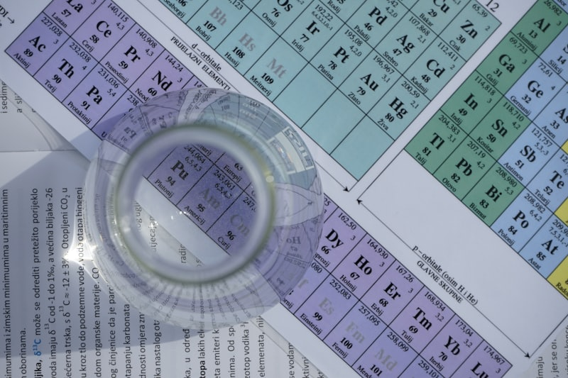

용어와 정의는 다 외웠는데 그래프가 나오면 틀리는 학생이 있습니다. 대현중학교 중3 과학에서 상위권과 중위권이 갈리는 지점은 암기량이 아니라 자료 해석입니다.
그래프는 "축부터" 읽는 겁니다
그래프 문제를 틀리는 학생 대부분은 곡선 모양부터 봅니다. 순서가 반대입니다. 가로축과 세로축이 무엇인지, 단위가 무엇인지를 먼저 읽으면, 곡선이 오르는지 내리는지가 비로소 의미를 갖습니다.
자료 해석 훈련 순서
- 축 확인 — 가로축·세로축의 이름과 단위를 소리 내어 읽습니다.
- 한 점 찍기 — 그래프 위 한 점을 골라 "이 점의 뜻"을 문장으로 말해 봅니다.
- 변화 서술 — "가로축이 커지면 세로축은 ~한다"를 한 줄로 씁니다.
- 개념 연결 — 그 변화가 배운 어떤 법칙 때문인지 개념 이름을 붙입니다.
남은 기간 배분
과학은 교과서 그림·그래프가 그대로 시험에 나옵니다. 문제집보다 교과서 자료를 다시 보는 것이 점수에 직결됩니다.
- 1주차 — 범위 안 교과서의 그림·그래프·표를 목록으로 만듭니다
- 2주차 — 자료마다 축 확인·변화 서술을 한 줄씩 적습니다
- 3주차 — 학교 기출에서 자료 해석 문항만 골라 풉니다
- 마지막 주 — 틀린 자료만 모아 개념 연결을 다시 합니다
💡 티칭코칭은 울산 남구 대현중학교 학생에게 맞춘 1:1 방문·화상 수업을 제공합니다. 과학은 자료를 읽는 순서부터 잡습니다.
👉 대현중학교 학교별 과외 안내 · 울산 남구 지역 과외 안내